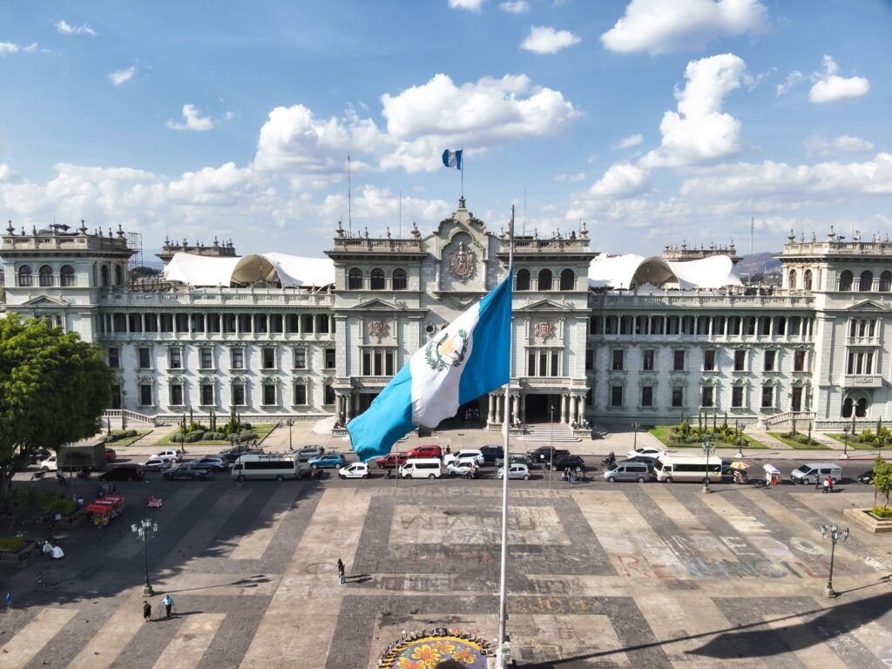

Palacio Nacional
El Palacio Nacional de la Cultura está localizado en el centro histórico de la Ciudad de Guatemala.
Es un espacio dedicado para diversas actividades artísticas y exposiciones temporales,
además de alojar colecciones de pintura y escultura. Fue declarado Monumento Histórico y
Artístico el 7 de noviembre de 1980 y el 11 de junio de 2001 pasó a formar parte del Ministerio de Cultura y Deportes.
También llamado localmente como el Palacio Verde o el Guacamolón, en alusión al color del famoso platillo precolombino.
Es utilizado por el Organismo Ejecutivo para actos protocolarios y es el kilómetro 0 para todas las carreteras
que van de la Ciudad de Guatemala a las cabeceras departamentales de la República de Guatemala.
Ver Detalles
Portal del Comercio
El Portal del Comercio es un emblemático edificio ubicado en el corazón de la Ciudad de Guatemala,
frente al Parque Central, entre la Catedral Metropolitana y el Palacio Nacional de la Cultura.
Su historia se remonta al siglo XVIII, cuando se construyó como un espacio destinado al comercio
tras el traslado de la capital desde Antigua Guatemala a la Nueva Guatemala de la Asunción.
Originalmente conocido como Portal Aycinena o Portal de Mercaderes,
fue diseñado por el arquitecto Luis Monzón y construido sobre una propiedad
del marqués Juan Fermín Aycinena e Irigoyen, quien lo integró a su residencia y lo utilizó para albergar comercios.
Ver Detalles
Biblioteca Nacional
La Biblioteca Nacional de Guatemala "Luis Cardoza y Aragón" fue fundada por
el decreto promulgado el día 18 de octubre de 1879 abierta al público en 1880
en el edificio de la Sociedad Económica. En 1918, la Biblioteca Nacional
se trasladó al Salón Mayor de la Universidad de San Carlos de Guatemala
en la novena avenida de la zona 1 de la Ciudad de Guatemala tras
los terremotos de 1917-1918. Desde entonces fue traslada varias veces
hasta que finalmente se estableció en su propio edificio en septiembre de 1957.
Entre sus directores han estado eminentes literatos como José Joaquín Palma y
Rafael Arévalo Martínez.
Ver Detalles